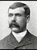
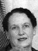

Anders Wilhelm Sorensen Family Groups
Home
Histories
Charts
Photos
Maps
Restricted
News
Info
Contact
 symbol is a link to a history,
symbol is a link to a history,  a source, and the chart
a source, and the chart  symbol is a link to a family group chart.)
symbol is a link to a family group chart.)|
Hans Sorensen and Ane Nielsen |
----> |  |
Anders Wilhelm Sorensen Born 9 Nov 1854 Hallenslev, (Torpegavn), Holbaek, Denmark Died 28 Dec 1923 Glenwood, Sevier, Utah, USA Mary Kirstine Steffensen Born 1 Apr 1859 Mou, Aalborg, Denmark Died 21 May 1892 Glenwood, Sevier, Utah, USA Married 11 Apr 1877 St. George, Washington, Utah, USA | |
|
Andrew William Sorenson Born 22 Jan 1878 Glenwood, Sevier, Utah, USA Died 30 Oct 1964 Provo, Utah, Utah, USA Married Christine Petersen 27 Sep 1905 Manti, Sanpete, Utah, USA The 1st child of Anders Wilhelm Sorensen and Mary Kirstine Steffensen |
| 12 |
Mary Lorena Sorenson Born 12 Aug 1880 Glenwood, Sevier, Utah, USA Died 27 Jul 1969 Richfield, Sevier, UT Married Heber Hendricksen 26 Sep 1900 Married George Sorensen 17 Oct 1919 Manti, Sanpete, Utah, USA The 2nd child of Anders Wilhelm Sorensen and Mary Kirstine Steffensen |
| * |
Caroline Sorenson Born 4 May 1884, Died 28 Jul 1892 Glenwood, Sevier, UT The 3rd child of Anders Wilhelm Sorensen and Mary Kirstine Steffensen |
| * |
Eva Ann Sorenson Born 6 Sep 1886, Died 21 Apr 1904 Glenwood, Sevier, UT The 4th child of Anders Wilhelm Sorensen and Mary Kirstine Steffensen |
| * |
Emma Ane Sorenson Born 3 Apr 1892, Died 19 Apr 1892 Glenwood, Sevier, UT The 5th child of Anders Wilhelm Sorensen and Mary Kirstine Steffensen |
|
Anders Wilhelm Sorensen Born 9 Nov 1854 Hallenslev, (Torpegavn), Holbaek, Denmark Died 28 Dec 1923 Glenwood, Sevier, Utah, USA Mary Josephine Christiansen Born 20 Jul 1870 Gunderup, Aalborg, Denmark Died 17 Feb 1916 Glenwood, Sevier, Utah, USA Married 22 Jun 1893 Manti, Sanpete, Utah, USA |
| * |
Athol Henry Sorenson Born 27 Apr 1894, Died 3 Jun 1894 Glenwood, Sevier, UT The 1st child of Anders Wilhelm Sorensen and Mary Josephine Christiansen |
|  |
William Christian Sorenson Born 30 Jul 1896 Glenwood, Sevier, Utah, USA Died 7 Jan 1964 Salt Lake City, Salt Lake, Utah, USA Married Lillian Irene Tuttle 19 May 1920 Manti, Sanpete, UT The 2nd child of Anders Wilhelm Sorensen and Mary Josephine Christiansen |
|
Mary Murray Sorenson Born 12 Mar 1898 Glenwood, Sevier, Utah, USA Died 15 Dec 1989 Evanston, Unita, Wyoming, USA Married Arnold Archibald Oldroyd 3 Jan 1917 Manti, Sanpete, UT The 3rd child of Anders Wilhelm Sorensen and Mary Josephine Christiansen |
|
Harvey Glendew Sorenson Born 30 Jan 1900 Glenwood, Sevier, Utah, USA Died 26 May 1987 Richfield, Sevier, UT Married Leola Gillespie 2 Sep 1925 Salt Lake City, Salt Lake, UT The 4th child of Anders Wilhelm Sorensen and Mary Josephine Christiansen |
|
Leroy Gerome Sorenson Born 18 Feb 1902 Glenwood, Sevier, Utah, USA Died 16 Sep 1977 Napa, Napa, CA Married LaVerda Hendrickson 20 Jan 1923 Manti, Sanpete, Utah, USA The 5th child of Anders Wilhelm Sorensen and Mary Josephine Christiansen |
|
Twila Evelyn Sorenson Born 22 May1904 Glenwood, Sevier, UT Died 8 Jul 1986 Salt Lake City, Salt Lake Married John Henry Naisbitt 8 Mar 1928 Salt Lake City, Salt Lake, UT The 6th child of Anders Wilhelm Sorensen and Mary Josephine Christiansen |
| 123 |
Orba or Arba Sorenson Born 12 Mar 1906 Glenwood, Sevier, Utah, USA Died 11 May 1960 Salt Lake City Salt Lake, UT Married Fredrick Thomas Naisbitt 8 Sep 1927 Salt Lake City, Salt Lake, UT Married Ruben Cottrel 31 Aug 1944 Married Clifford "J" Warburton 31 Aug 1949 The 7th child of Anders Wilhelm Sorensen and Mary Josephine Christiansen |
| * |
Leslie "H" Sorensen Born 8 Aug 1908, Died 28 Sep 1909 Glenwood, Sevier, UT The 8th child of Anders Wilhelm Sorensen and Mary Josephine Christiansen |
|
Lee Cliff Sorenson Born 22 Jun 1910 Glenwood, Sevier, Utah, USA Died 4 Dec 1984, Salt Lake City, Salt Lake, Utah, USA Married Ethel Mae Konold 10 Feb 1951 Elko, Elko, USA The 9th child of Anders Wilhelm Sorensen and Mary Josephine Christiansen |
|
Farrell Evan Sorenson Born 30 Apr 1913 Glenwood, Sevier, Utah, USA Died 1 Sep 1973 Richfield, Sevier, Utah, USA Married Rosamond Beanland Gribble 4 Oct 1933 Richfield, Sevier, Utah, USA The 10th child of Anders Wilhelm Sorensen and Mary Josephine Christiansen |